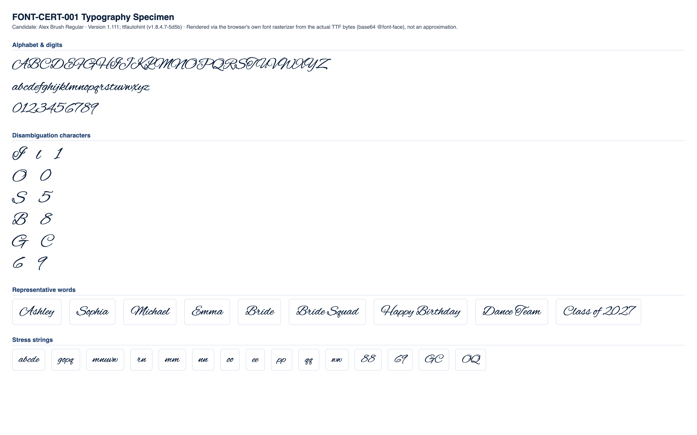

CONDITIONAL PASS
Classification and the feedback below are computed at the mid-range letter height for each stone size (the representative case). Full min/mid/max data is shown in section 4.
No blocking issues found.
Min and max height produce no more collisions or low-stone-count findings than mid height.
Medium
No blocking production failures, but 13 refinement note(s) were found (11 actionable item(s) below) -- readability, spacing, or anatomy concerns that would need addressing for production quality.
| Status | Check | Category | Detail |
|---|---|---|---|
| PASS | Successful TTF parsing | parsing | opentype.js parsed the file without error. |
| PASS | Outline format | structure | TrueType (quadratic) outlines. sfnt signature "0x00010000", opentype.js outlinesFormat="truetype". |
| PASS | Quadratic TrueType outlines | structure | TrueType file with quadratic curves confirmed: 605 curve commands found across 10 sampled glyphs. |
| PASS | unitsPerEm | structure | unitsPerEm = 1000 |
| PASS | Glyph count | structure | 617 glyphs (font.numGlyphs=617). |
| PASS | .notdef at glyph index 0 | structure | .notdef confirmed at glyph index 0. |
| PASS | Unicode cmap coverage | coverage | cmap maps 575 Unicode code point(s) to glyphs. |
| PASS | Required character coverage (A-Z, a-z, 0-9, space, . , ' - ! ?) | coverage | All 69 required characters map to a real glyph (glyph index != 0). |
| PASS | Required sfnt tables | structure | All required tables present: cmap, glyf, head, hhea, hmtx, loca, maxp, name, post, OS/2. |
| PASS | Family / subfamily / version / PostScript naming | naming | family="Alex Brush", subfamily="Regular", version="Version 1.111; ttfautohint (v1.8.4.7-5d5b)", postScriptName="AlexBrush-Regular". |
| PASS | Ascender, descender, line gap, horizontal metrics | metrics | ascender=825, descender=-425, hhea.lineGap=0, advanceWidthMax=1747, numberOfHMetrics=616 (hmtx table present: true). |
| PASS | Invalid or empty glyphs | geometry | No mapped, non-whitespace, non-invisible-by-design character resolves to an empty outline. |
| PASS | Open contours | geometry | Every required-character contour closes explicitly (an explicit "Z"/closepath command) or implicitly (its final point returns to its starting point). |
| PASS | Self-intersections | geometry | Strict transversal-crossing test (deduplicated, 16-segments-per-curve flattened outline, 69 required characters) found no self- or cross-contour crossings. |
| WARNING | Zero-length or duplicate outline segments | geometry | 68 of 69 character(s) contain 2091 raw zero-length draw command(s) total (a command whose endpoint exactly duplicates the current pen position -- draws nothing, harmless no-op, but real source-file redundancy), 0 duplicate outline segments. Not production-blocking: these commands have no visual or geometric effect. Per-character counts: "A" (zero-length:41, duplicate:0), "B" (zero-length:43, duplicate:0), "C" (zero-length:22, duplicate:0), "D" (zero-length:35, duplicate:0), "E" (zero-length:40, duplicate:0), "F" (zero-length:36, duplicate:0), "G" (zero-length:32, duplicate:0), "H" (zero-length:57, duplicate:0), +60 more. |
| PASS | Coordinates outside valid TrueType ranges | geometry | All required-character outline coordinates fall within the signed 16-bit range (-32768 to 32767). |
| PASS | Inconsistent or suspicious advance widths / side bearings | metrics | Advance widths for required characters cluster reasonably around the median (568 units). |
Rendered from the actual source TTF via a base64-embedded @font-face rule (typography), and through the real production pipeline FontManager → OpenTypeProvider → GeometryEngine.generateTextLayout() → StoneLayout (rhinestone), at this milestone's own physical letter-height range per stone size:
| Stone size | Min | Mid (representative) | Max |
|---|---|---|---|
| SS6 | 35mm | 42.5mm | 50mm |
| SS10 | 45mm | 52.5mm | 60mm |
| SS16 | 65mm | 77.5mm | 90mm |
| SS20 | 80mm | 95mm | 110mm |
| SS30 | 106mm | 108.5mm | 111mm |


Successful layout generation (a non-empty StoneLayout with no collisions) is not the same as visual readability -- see each height variant's readability metrics below for objective, threshold-based findings.
| SS6 | text height: 35mm |
|---|---|
| SS10 | text height: 45mm |
| SS16 | text height: 65mm |
| SS20 | text height: 80mm |
| SS30 | text height: 106mm |
| Pair | Size | Stone counts | Chamfer distance | Result |
|---|---|---|---|---|
| "I" vs "l" | SS16 | 53 / 16 | 0.1199 | PASS |
| "l" vs "1" | SS16 | 16 / 18 | 0.0789 | WARNING |
| "I" vs "1" | SS16 | 53 / 18 | 0.1092 | PASS |
| "O" vs "0" | SS16 | 48 / 28 | 0.0671 | WARNING |
| "S" vs "5" | SS16 | 45 / 34 | 0.0660 | WARNING |
| "B" vs "8" | SS16 | 61 / 36 | 0.0743 | WARNING |
| "G" vs "C" | SS16 | 55 / 40 | 0.0672 | WARNING |
| "Q" vs "O" | SS16 | 59 / 48 | 0.0787 | WARNING |
| "e" vs "c" | SS16 | 17 / 14 | 0.0422 | WARNING |
| "e" vs "o" | SS16 | 17 / 15 | 0.0903 | PASS |
| "c" vs "o" | SS16 | 14 / 15 | 0.0710 | WARNING |
| "6" vs "9" | SS16 | 31 / 27 | 0.1330 | PASS |
Threshold: 0.09 (normalized, unit-height point clouds). Below threshold = flagged as visually similar.
| Char | SS6 | SS10 | SS16 | SS20 | SS30 |
|---|---|---|---|---|---|
| "A" | 63 | 54 | 60 | 64 | 60 |
| "B" | 63 | 56 | 61 | 65 | 59 |
| "C" | 42 | 38 | 40 | 42 | 41 |
| "D" | 57 | 52 | 53 | 60 | 55 |
| "E" | 49 | 44 | 47 | 49 | 47 |
| "F" | 40 | 36 | 35 | 39 | 39 |
| "G" | 57 | 49 | 55 | 57 | 52 |
| "H" | 65 | 53 | 55 | 61 | 58 |
| "I" | 56 | 51 | 53 | 56 | 57 |
| "J" | 45 | 42 | 43 | 45 | 51 |
| "K" | 65 | 63 | 61 | 67 | 66 |
| "L" | 52 | 46 | 48 | 53 | 49 |
| "M" | 86 | 79 | 74 | 82 | 88 |
| "N" | 69 | 55 | 58 | 62 | 61 |
| "O" | 52 | 45 | 48 | 52 | 48 |
| "P" | 64 | 59 | 62 | 67 | 66 |
| "Q" | 67 | 56 | 59 | 64 | 60 |
| "R" | 57 | 52 | 53 | 56 | 55 |
| "S" | 52 | 44 | 45 | 51 | 48 |
| "T" | 63 | 57 | 60 | 63 | 63 |
| "U" | 53 | 47 | 49 | 53 | 51 |
| "V" | 51 | 47 | 46 | 52 | 51 |
| "W" | 67 | 60 | 63 | 70 | 66 |
| "X" | 51 | 46 | 51 | 51 | 50 |
| "Y" | 56 | 52 | 55 | 57 | 53 |
| "Z" | 45 | 42 | 43 | 47 | 42 |
| "a" | 23 | 23 | 21 | 23 | 20 |
| "b" | 27 | 22 | 22 | 25 | 22 |
| "c" | 15 | 15 | 14 | 14 | 14 |
| "d" | 29 | 24 | 26 | 28 | 25 |
| "e" | 18 | 17 | 17 | 17 | 18 |
| "f" | 23 | 20 | 19 | 22 | 22 |
| "g" | 23 | 22 | 22 | 25 | 25 |
| "h" | 25 | 23 | 22 | 25 | 26 |
| "i" | 16 | 12 | 13 | 14 | 13 |
| "j" | 16 | 13 | 13 | 13 | 14 |
| "k" | 29 | 25 | 26 | 30 | 27 |
| "l" | 18 | 16 | 16 | 19 | 17 |
| "m" | 34 | 28 | 28 | 33 | 30 |
| "n" | 22 | 16 | 19 | 18 | 18 |
| "o" | 14 | 14 | 15 | 15 | 14 |
| "p" | 22 | 20 | 22 | 23 | 23 |
| "q" | 24 | 21 | 21 | 22 | 22 |
| "r" | 17 | 17 | 14 | 16 | 16 |
| "s" | 18 | 17 | 18 | 18 | 17 |
| "t" | 19 | 16 | 17 | 18 | 18 |
| "u" | 24 | 20 | 20 | 24 | 23 |
| "v" | 15 | 13 | 13 | 15 | 14 |
| "w" | 23 | 19 | 21 | 22 | 21 |
| "x" | 26 | 22 | 23 | 26 | 24 |
| "y" | 24 | 19 | 22 | 24 | 23 |
| "z" | 16 | 15 | 15 | 18 | 16 |
| "0" | 30 | 28 | 28 | 31 | 30 |
| "1" | 20 | 20 | 18 | 20 | 17 |
| "2" | 35 | 32 | 33 | 37 | 34 |
| "3" | 37 | 33 | 34 | 38 | 39 |
| "4" | 32 | 30 | 31 | 33 | 32 |
| "5" | 37 | 32 | 34 | 38 | 37 |
| "6" | 35 | 31 | 31 | 36 | 32 |
| "7" | 25 | 19 | 22 | 23 | 22 |
| "8" | 37 | 35 | 36 | 40 | 37 |
| "9" | 31 | 30 | 27 | 31 | 29 |
Cell values are stone count per glyph at that stone size ("coll." = colliding stone pairs found).
| Word | SS6 | SS10 | SS16 | SS20 | SS30 |
|---|---|---|---|---|---|
| Ashley | 158 stones, min spacing 2.03mm, 3 cluster(s) | 138 stones, min spacing 2.83mm, 2 cluster(s) | 143 stones, min spacing 4.01mm, 3 cluster(s) | 159 stones, min spacing 4.71mm, 2 cluster(s) | 152 stones, min spacing 6.41mm, 3 cluster(s) |
| Sophia | 145 stones, min spacing 2.01mm, 1 cluster(s) | 128 stones, min spacing 2.82mm, 1 cluster(s) | 131 stones, min spacing 4.01mm, 3 cluster(s) | 142 stones, min spacing 4.70mm, 2 cluster(s) | 137 stones, min spacing 6.40mm, 3 cluster(s) |
| Michael | 190 stones, min spacing 2.00mm, 1 cluster(s) | 172 stones, min spacing 2.83mm, 2 cluster(s) | 165 stones, min spacing 4.00mm, 5 cluster(s) | 185 stones, min spacing 4.70mm, 3 cluster(s) | 183 stones, min spacing 6.40mm, 6 cluster(s) |
| Emma | 134 stones, min spacing 2.01mm, 1 cluster(s) | 119 stones, min spacing 2.84mm, 1 cluster(s) | 118 stones, min spacing 4.04mm, 6 cluster(s) | 134 stones, min spacing 4.70mm, 2 cluster(s) | 123 stones, min spacing 6.40mm, 6 cluster(s) |
| Bride | 134 stones, min spacing 2.01mm, 2 cluster(s) | 120 stones, min spacing 2.80mm, 3 cluster(s) | 124 stones, min spacing 4.00mm, 4 cluster(s) | 134 stones, min spacing 4.71mm, 3 cluster(s) | 126 stones, min spacing 6.43mm, 4 cluster(s) |
| Bride Squad | 281 stones, min spacing 2.01mm, 3 cluster(s) | 247 stones, min spacing 2.80mm, 4 cluster(s) | 253 stones, min spacing 4.00mm, 6 cluster(s) | 278 stones, min spacing 4.70mm, 4 cluster(s) | 259 stones, min spacing 6.40mm, 7 cluster(s) |
| Happy Birthday | 355 stones, min spacing 2.01mm, 7 cluster(s) | 308 stones, min spacing 2.80mm, 7 cluster(s) | 322 stones, min spacing 4.00mm, 10 cluster(s) | 352 stones, min spacing 4.70mm, 6 cluster(s) | 326 stones, min spacing 6.40mm, 11 cluster(s) |
| Dance Team | 260 stones, min spacing 2.00mm, 4 cluster(s) | 235 stones, min spacing 2.82mm, 6 cluster(s) | 235 stones, min spacing 4.03mm, 7 cluster(s) | 258 stones, min spacing 4.70mm, 5 cluster(s) | 243 stones, min spacing 6.40mm, 8 cluster(s) |
| Class of 2027 | 275 stones, min spacing 2.01mm, 10 cluster(s) | 247 stones, min spacing 2.81mm, 6 cluster(s) | 255 stones, min spacing 4.01mm, 12 cluster(s) | 277 stones, min spacing 4.70mm, 6 cluster(s) | 260 stones, min spacing 6.40mm, 11 cluster(s) |
No glyph/size combination falls below the minimum meaningful stone count.
No counter-bearing glyph/size combination falls below the counter-bearing stone-count floor.
| Pair | Size | Chamfer distance | Stone counts |
|---|---|---|---|
| "l" vs "1" | SS6 | 0.0686 | 18 / 20 |
| "O" vs "0" | SS6 | 0.0632 | 52 / 30 |
| "S" vs "5" | SS6 | 0.0644 | 52 / 37 |
| "B" vs "8" | SS6 | 0.0749 | 63 / 37 |
| "G" vs "C" | SS6 | 0.0595 | 57 / 42 |
| "Q" vs "O" | SS6 | 0.0758 | 67 / 52 |
| "e" vs "c" | SS6 | 0.0419 | 18 / 15 |
| "e" vs "o" | SS6 | 0.0817 | 18 / 14 |
| "c" vs "o" | SS6 | 0.0686 | 15 / 14 |
| "l" vs "1" | SS10 | 0.0749 | 16 / 20 |
| "O" vs "0" | SS10 | 0.0716 | 45 / 28 |
| "S" vs "5" | SS10 | 0.0683 | 44 / 32 |
| "B" vs "8" | SS10 | 0.0730 | 56 / 35 |
| "G" vs "C" | SS10 | 0.0634 | 49 / 38 |
| "Q" vs "O" | SS10 | 0.0808 | 56 / 45 |
| "e" vs "c" | SS10 | 0.0325 | 17 / 15 |
| "e" vs "o" | SS10 | 0.0787 | 17 / 14 |
| "c" vs "o" | SS10 | 0.0768 | 15 / 14 |
| "l" vs "1" | SS16 | 0.0789 | 16 / 18 |
| "O" vs "0" | SS16 | 0.0671 | 48 / 28 |
| "S" vs "5" | SS16 | 0.0660 | 45 / 34 |
| "B" vs "8" | SS16 | 0.0743 | 61 / 36 |
| "G" vs "C" | SS16 | 0.0672 | 55 / 40 |
| "Q" vs "O" | SS16 | 0.0787 | 59 / 48 |
| "e" vs "c" | SS16 | 0.0422 | 17 / 14 |
| "c" vs "o" | SS16 | 0.0710 | 14 / 15 |
| "l" vs "1" | SS20 | 0.0802 | 19 / 20 |
| "O" vs "0" | SS20 | 0.0631 | 52 / 31 |
| "S" vs "5" | SS20 | 0.0638 | 51 / 38 |
| "B" vs "8" | SS20 | 0.0706 | 65 / 40 |
| "G" vs "C" | SS20 | 0.0660 | 57 / 42 |
| "Q" vs "O" | SS20 | 0.0791 | 64 / 52 |
| "e" vs "c" | SS20 | 0.0526 | 17 / 14 |
| "e" vs "o" | SS20 | 0.0746 | 17 / 15 |
| "c" vs "o" | SS20 | 0.0870 | 14 / 15 |
| "l" vs "1" | SS30 | 0.0787 | 17 / 17 |
| "O" vs "0" | SS30 | 0.0669 | 48 / 30 |
| "S" vs "5" | SS30 | 0.0660 | 48 / 37 |
| "B" vs "8" | SS30 | 0.0751 | 59 / 37 |
| "G" vs "C" | SS30 | 0.0654 | 52 / 41 |
| "Q" vs "O" | SS30 | 0.0788 | 60 / 48 |
| "e" vs "c" | SS30 | 0.0526 | 18 / 14 |
| "e" vs "o" | SS30 | 0.0853 | 18 / 14 |
| "c" vs "o" | SS30 | 0.0742 | 14 / 14 |
| Size | Diameter | Scale | Rendered stone size | Result |
|---|---|---|---|---|
| SS6 | 2mm | 5px/mm | 10px | PASS |
| SS10 | 2.8mm | 4px/mm | 11.2px | PASS |
| SS16 | 4mm | 3.5px/mm | 14px | PASS |
| SS20 | 4.7mm | 3px/mm | 14.1px | PASS |
| SS30 | 6.4mm | 2.5px/mm | 16px | PASS |
| SS6 | text height: 42.5mm |
|---|---|
| SS10 | text height: 52.5mm |
| SS16 | text height: 77.5mm |
| SS20 | text height: 95mm |
| SS30 | text height: 108.5mm |
| Pair | Size | Stone counts | Chamfer distance | Result |
|---|---|---|---|---|
| "I" vs "l" | SS16 | 70 / 24 | 0.0994 | PASS |
| "l" vs "1" | SS16 | 24 / 27 | 0.0687 | WARNING |
| "I" vs "1" | SS16 | 70 / 27 | 0.0911 | PASS |
| "O" vs "0" | SS16 | 64 / 43 | 0.0597 | WARNING |
| "S" vs "5" | SS16 | 63 / 48 | 0.0609 | WARNING |
| "B" vs "8" | SS16 | 76 / 49 | 0.0725 | WARNING |
| "G" vs "C" | SS16 | 74 / 51 | 0.0584 | WARNING |
| "Q" vs "O" | SS16 | 82 / 64 | 0.0737 | WARNING |
| "e" vs "c" | SS16 | 21 / 18 | 0.0642 | WARNING |
| "e" vs "o" | SS16 | 21 / 19 | 0.0740 | WARNING |
| "c" vs "o" | SS16 | 18 / 19 | 0.0663 | WARNING |
| "6" vs "9" | SS16 | 42 / 37 | 0.1369 | PASS |
Threshold: 0.09 (normalized, unit-height point clouds). Below threshold = flagged as visually similar.
| Char | SS6 | SS10 | SS16 | SS20 | SS30 |
|---|---|---|---|---|---|
| "A" | 85 | 71 | 78 | 84 | 63 |
| "B" | 89 | 74 | 76 | 87 | 64 |
| "C" | 60 | 50 | 51 | 58 | 43 |
| "D" | 88 | 70 | 83 | 88 | 61 |
| "E" | 62 | 56 | 58 | 63 | 49 |
| "F" | 60 | 49 | 53 | 57 | 39 |
| "G" | 87 | 67 | 74 | 82 | 55 |
| "H" | 100 | 78 | 89 | 91 | 65 |
| "I" | 76 | 66 | 70 | 78 | 57 |
| "J" | 70 | 57 | 64 | 68 | 52 |
| "K" | 103 | 72 | 84 | 92 | 68 |
| "L" | 70 | 58 | 63 | 69 | 50 |
| "M" | 121 | 101 | 109 | 121 | 82 |
| "N" | 95 | 76 | 78 | 91 | 65 |
| "O" | 70 | 59 | 64 | 67 | 52 |
| "P" | 90 | 76 | 79 | 88 | 68 |
| "Q" | 90 | 75 | 82 | 87 | 62 |
| "R" | 77 | 63 | 71 | 74 | 58 |
| "S" | 65 | 61 | 63 | 66 | 49 |
| "T" | 92 | 76 | 81 | 87 | 62 |
| "U" | 66 | 58 | 63 | 68 | 55 |
| "V" | 68 | 57 | 63 | 65 | 49 |
| "W" | 97 | 76 | 87 | 94 | 67 |
| "X" | 68 | 57 | 61 | 65 | 52 |
| "Y" | 92 | 68 | 68 | 92 | 57 |
| "Z" | 73 | 59 | 66 | 69 | 48 |
| "a" | 34 | 26 | 27 | 32 | 25 |
| "b" | 32 | 29 | 29 | 34 | 23 |
| "c" | 20 | 17 | 18 | 20 | 16 |
| "d" | 41 | 32 | 34 | 41 | 27 |
| "e" | 22 | 20 | 21 | 21 | 18 |
| "f" | 32 | 27 | 29 | 31 | 23 |
| "g" | 37 | 30 | 29 | 36 | 26 |
| "h" | 40 | 30 | 34 | 40 | 25 |
| "i" | 21 | 16 | 18 | 20 | 13 |
| "j" | 20 | 17 | 18 | 20 | 14 |
| "k" | 42 | 35 | 39 | 42 | 28 |
| "l" | 25 | 22 | 24 | 24 | 19 |
| "m" | 45 | 36 | 40 | 44 | 33 |
| "n" | 32 | 27 | 27 | 30 | 20 |
| "o" | 23 | 19 | 19 | 21 | 14 |
| "p" | 34 | 27 | 27 | 32 | 23 |
| "q" | 37 | 28 | 28 | 30 | 23 |
| "r" | 22 | 22 | 22 | 22 | 18 |
| "s" | 23 | 20 | 22 | 24 | 19 |
| "t" | 25 | 20 | 21 | 23 | 19 |
| "u" | 33 | 28 | 29 | 29 | 23 |
| "v" | 22 | 19 | 20 | 22 | 14 |
| "w" | 30 | 25 | 28 | 30 | 21 |
| "x" | 34 | 30 | 31 | 32 | 25 |
| "y" | 35 | 30 | 30 | 32 | 26 |
| "z" | 22 | 21 | 22 | 23 | 17 |
| "0" | 51 | 35 | 43 | 48 | 30 |
| "1" | 31 | 26 | 27 | 29 | 18 |
| "2" | 45 | 37 | 41 | 44 | 36 |
| "3" | 53 | 45 | 47 | 50 | 39 |
| "4" | 46 | 35 | 39 | 41 | 32 |
| "5" | 53 | 44 | 48 | 53 | 38 |
| "6" | 47 | 40 | 42 | 47 | 32 |
| "7" | 35 | 25 | 30 | 33 | 23 |
| "8" | 54 | 43 | 49 | 51 | 40 |
| "9" | 41 | 34 | 37 | 39 | 31 |
Cell values are stone count per glyph at that stone size ("coll." = colliding stone pairs found).
| Word | SS6 | SS10 | SS16 | SS20 | SS30 |
|---|---|---|---|---|---|
| Ashley | 219 stones, min spacing 2.00mm, 2 cluster(s) | 182 stones, min spacing 2.80mm, 4 cluster(s) | 197 stones, min spacing 4.01mm, 3 cluster(s) | 215 stones, min spacing 4.73mm, 4 cluster(s) | 159 stones, min spacing 6.40mm, 2 cluster(s) |
| Sophia | 210 stones, min spacing 2.00mm, 1 cluster(s) | 171 stones, min spacing 2.80mm, 1 cluster(s) | 181 stones, min spacing 4.01mm, 2 cluster(s) | 202 stones, min spacing 4.74mm, 4 cluster(s) | 142 stones, min spacing 6.51mm, 5 cluster(s) |
| Michael | 270 stones, min spacing 2.02mm, 2 cluster(s) | 222 stones, min spacing 2.81mm, 3 cluster(s) | 237 stones, min spacing 4.02mm, 5 cluster(s) | 266 stones, min spacing 4.71mm, 4 cluster(s) | 184 stones, min spacing 6.44mm, 8 cluster(s) |
| Emma | 180 stones, min spacing 2.03mm, 3 cluster(s) | 150 stones, min spacing 2.84mm, 1 cluster(s) | 160 stones, min spacing 4.02mm, 4 cluster(s) | 179 stones, min spacing 4.71mm, 4 cluster(s) | 134 stones, min spacing 6.46mm, 3 cluster(s) |
| Bride | 188 stones, min spacing 2.00mm, 1 cluster(s) | 157 stones, min spacing 2.81mm, 1 cluster(s) | 165 stones, min spacing 4.03mm, 2 cluster(s) | 183 stones, min spacing 4.71mm, 5 cluster(s) | 132 stones, min spacing 6.43mm, 5 cluster(s) |
| Bride Squad | 393 stones, min spacing 2.00mm, 2 cluster(s) | 326 stones, min spacing 2.80mm, 2 cluster(s) | 340 stones, min spacing 4.01mm, 4 cluster(s) | 373 stones, min spacing 4.70mm, 8 cluster(s) | 273 stones, min spacing 6.42mm, 7 cluster(s) |
| Happy Birthday | 524 stones, min spacing 2.00mm, 3 cluster(s) | 418 stones, min spacing 2.81mm, 2 cluster(s) | 443 stones, min spacing 4.02mm, 5 cluster(s) | 496 stones, min spacing 4.71mm, 11 cluster(s) | 357 stones, min spacing 6.41mm, 9 cluster(s) |
| Dance Team | 378 stones, min spacing 2.02mm, 4 cluster(s) | 303 stones, min spacing 2.80mm, 3 cluster(s) | 332 stones, min spacing 4.01mm, 5 cluster(s) | 362 stones, min spacing 4.71mm, 9 cluster(s) | 263 stones, min spacing 6.41mm, 5 cluster(s) |
| Class of 2027 | 393 stones, min spacing 2.00mm, 7 cluster(s) | 311 stones, min spacing 2.81mm, 9 cluster(s) | 343 stones, min spacing 4.00mm, 10 cluster(s) | 377 stones, min spacing 4.72mm, 12 cluster(s) | 278 stones, min spacing 6.46mm, 13 cluster(s) |
No glyph/size combination falls below the minimum meaningful stone count.
No counter-bearing glyph/size combination falls below the counter-bearing stone-count floor.
| Pair | Size | Chamfer distance | Stone counts |
|---|---|---|---|
| "l" vs "1" | SS6 | 0.0588 | 25 / 31 |
| "I" vs "1" | SS6 | 0.0867 | 76 / 31 |
| "O" vs "0" | SS6 | 0.0562 | 70 / 51 |
| "S" vs "5" | SS6 | 0.0595 | 65 / 53 |
| "B" vs "8" | SS6 | 0.0694 | 89 / 54 |
| "G" vs "C" | SS6 | 0.0575 | 87 / 60 |
| "Q" vs "O" | SS6 | 0.0723 | 90 / 70 |
| "e" vs "c" | SS6 | 0.0417 | 22 / 20 |
| "e" vs "o" | SS6 | 0.0772 | 22 / 23 |
| "c" vs "o" | SS6 | 0.0727 | 20 / 23 |
| "l" vs "1" | SS10 | 0.0657 | 22 / 26 |
| "O" vs "0" | SS10 | 0.0611 | 59 / 35 |
| "S" vs "5" | SS10 | 0.0623 | 61 / 44 |
| "B" vs "8" | SS10 | 0.0724 | 74 / 43 |
| "G" vs "C" | SS10 | 0.0617 | 67 / 50 |
| "Q" vs "O" | SS10 | 0.0747 | 75 / 59 |
| "e" vs "c" | SS10 | 0.0557 | 20 / 17 |
| "e" vs "o" | SS10 | 0.0718 | 20 / 19 |
| "c" vs "o" | SS10 | 0.0637 | 17 / 19 |
| "l" vs "1" | SS16 | 0.0687 | 24 / 27 |
| "O" vs "0" | SS16 | 0.0597 | 64 / 43 |
| "S" vs "5" | SS16 | 0.0609 | 63 / 48 |
| "B" vs "8" | SS16 | 0.0725 | 76 / 49 |
| "G" vs "C" | SS16 | 0.0584 | 74 / 51 |
| "Q" vs "O" | SS16 | 0.0737 | 82 / 64 |
| "e" vs "c" | SS16 | 0.0642 | 21 / 18 |
| "e" vs "o" | SS16 | 0.0740 | 21 / 19 |
| "c" vs "o" | SS16 | 0.0663 | 18 / 19 |
| "l" vs "1" | SS20 | 0.0677 | 24 / 29 |
| "I" vs "1" | SS20 | 0.0886 | 78 / 29 |
| "O" vs "0" | SS20 | 0.0601 | 67 / 48 |
| "S" vs "5" | SS20 | 0.0598 | 66 / 53 |
| "B" vs "8" | SS20 | 0.0718 | 87 / 51 |
| "G" vs "C" | SS20 | 0.0575 | 82 / 58 |
| "Q" vs "O" | SS20 | 0.0763 | 87 / 67 |
| "e" vs "c" | SS20 | 0.0326 | 21 / 20 |
| "e" vs "o" | SS20 | 0.0787 | 21 / 21 |
| "c" vs "o" | SS20 | 0.0710 | 20 / 21 |
| "l" vs "1" | SS30 | 0.0769 | 19 / 18 |
| "O" vs "0" | SS30 | 0.0649 | 52 / 30 |
| "S" vs "5" | SS30 | 0.0665 | 49 / 38 |
| "B" vs "8" | SS30 | 0.0749 | 64 / 40 |
| "G" vs "C" | SS30 | 0.0636 | 55 / 43 |
| "Q" vs "O" | SS30 | 0.0770 | 62 / 52 |
| "e" vs "c" | SS30 | 0.0777 | 18 / 16 |
| "e" vs "o" | SS30 | 0.0803 | 18 / 14 |
| "c" vs "o" | SS30 | 0.0590 | 16 / 14 |
| Size | Diameter | Scale | Rendered stone size | Result |
|---|---|---|---|---|
| SS6 | 2mm | 5px/mm | 10px | PASS |
| SS10 | 2.8mm | 4px/mm | 11.2px | PASS |
| SS16 | 4mm | 3.5px/mm | 14px | PASS |
| SS20 | 4.7mm | 3px/mm | 14.1px | PASS |
| SS30 | 6.4mm | 2.5px/mm | 16px | PASS |
| SS6 | text height: 50mm |
|---|---|
| SS10 | text height: 60mm |
| SS16 | text height: 90mm |
| SS20 | text height: 110mm |
| SS30 | text height: 111mm |
| Pair | Size | Stone counts | Chamfer distance | Result |
|---|---|---|---|---|
| "I" vs "l" | SS16 | 93 / 29 | 0.0947 | PASS |
| "l" vs "1" | SS16 | 29 / 38 | 0.0607 | WARNING |
| "I" vs "1" | SS16 | 93 / 38 | 0.0832 | WARNING |
| "O" vs "0" | SS16 | 81 / 60 | 0.0552 | WARNING |
| "S" vs "5" | SS16 | 74 / 63 | 0.0563 | WARNING |
| "B" vs "8" | SS16 | 103 / 59 | 0.0729 | WARNING |
| "G" vs "C" | SS16 | 99 / 69 | 0.0521 | WARNING |
| "Q" vs "O" | SS16 | 106 / 81 | 0.0715 | WARNING |
| "e" vs "c" | SS16 | 28 / 25 | 0.0342 | WARNING |
| "e" vs "o" | SS16 | 28 / 27 | 0.0625 | WARNING |
| "c" vs "o" | SS16 | 25 / 27 | 0.0618 | WARNING |
| "6" vs "9" | SS16 | 59 / 47 | 0.1126 | PASS |
Threshold: 0.09 (normalized, unit-height point clouds). Below threshold = flagged as visually similar.
| Char | SS6 | SS10 | SS16 | SS20 | SS30 |
|---|---|---|---|---|---|
| "A" | 111 | 86 | 100 | 104 | 69 |
| "B" | 115 | 92 | 103 | 112 | 65 |
| "C" | 78 | 58 | 69 | 76 | 45 |
| "D" | 115 | 92 | 103 | 107 | 65 |
| "E" | 80 | 65 | 71 | 75 | 49 |
| "F" | 77 | 63 | 69 | 74 | 42 |
| "G" | 116 | 89 | 99 | 113 | 58 |
| "H" | 124 | 109 | 114 | 119 | 65 |
| "I" | 107 | 78 | 93 | 98 | 59 |
| "J" | 88 | 73 | 78 | 84 | 55 |
| "K" | 135 | 99 | 113 | 124 | 69 |
| "L" | 95 | 72 | 81 | 90 | 55 |
| "M" | 156 | 126 | 142 | 154 | 93 |
| "N" | 119 | 99 | 109 | 115 | 65 |
| "O" | 89 | 73 | 81 | 86 | 54 |
| "P" | 113 | 96 | 103 | 112 | 71 |
| "Q" | 113 | 90 | 106 | 108 | 65 |
| "R" | 104 | 83 | 91 | 95 | 57 |
| "S" | 87 | 70 | 74 | 81 | 53 |
| "T" | 117 | 93 | 108 | 114 | 67 |
| "U" | 90 | 71 | 77 | 84 | 56 |
| "V" | 86 | 72 | 77 | 82 | 55 |
| "W" | 134 | 103 | 119 | 127 | 73 |
| "X" | 88 | 72 | 80 | 87 | 52 |
| "Y" | 119 | 94 | 106 | 113 | 58 |
| "Z" | 97 | 78 | 85 | 98 | 46 |
| "a" | 42 | 37 | 40 | 43 | 24 |
| "b" | 40 | 35 | 38 | 41 | 24 |
| "c" | 30 | 20 | 25 | 29 | 15 |
| "d" | 52 | 46 | 50 | 51 | 29 |
| "e" | 31 | 27 | 28 | 30 | 19 |
| "f" | 40 | 33 | 35 | 40 | 23 |
| "g" | 52 | 37 | 42 | 48 | 27 |
| "h" | 48 | 41 | 44 | 49 | 30 |
| "i" | 25 | 21 | 22 | 24 | 14 |
| "j" | 28 | 22 | 23 | 25 | 14 |
| "k" | 52 | 43 | 48 | 52 | 31 |
| "l" | 31 | 27 | 29 | 31 | 18 |
| "m" | 58 | 51 | 52 | 56 | 31 |
| "n" | 43 | 34 | 36 | 40 | 21 |
| "o" | 29 | 24 | 27 | 27 | 14 |
| "p" | 42 | 34 | 39 | 40 | 25 |
| "q" | 50 | 36 | 42 | 45 | 25 |
| "r" | 30 | 26 | 26 | 29 | 19 |
| "s" | 37 | 26 | 29 | 29 | 19 |
| "t" | 34 | 26 | 28 | 28 | 20 |
| "u" | 44 | 34 | 36 | 39 | 23 |
| "v" | 27 | 22 | 24 | 25 | 17 |
| "w" | 39 | 31 | 35 | 36 | 23 |
| "x" | 46 | 38 | 41 | 39 | 24 |
| "y" | 47 | 34 | 38 | 40 | 26 |
| "z" | 26 | 23 | 26 | 28 | 17 |
| "0" | 68 | 56 | 60 | 68 | 32 |
| "1" | 40 | 34 | 38 | 38 | 22 |
| "2" | 61 | 47 | 52 | 56 | 37 |
| "3" | 66 | 51 | 60 | 62 | 42 |
| "4" | 60 | 49 | 54 | 60 | 34 |
| "5" | 68 | 54 | 63 | 67 | 39 |
| "6" | 64 | 49 | 59 | 61 | 34 |
| "7" | 50 | 38 | 42 | 46 | 24 |
| "8" | 65 | 53 | 59 | 65 | 42 |
| "9" | 56 | 42 | 47 | 53 | 33 |
Cell values are stone count per glyph at that stone size ("coll." = colliding stone pairs found).
| Word | SS6 | SS10 | SS16 | SS20 | SS30 |
|---|---|---|---|---|---|
| Ashley | 291 stones, min spacing 2.00mm, 3 cluster(s) | 224 stones, min spacing 2.82mm, 4 cluster(s) | 253 stones, min spacing 4.00mm, 2 cluster(s) | 266 stones, min spacing 4.73mm, 3 cluster(s) | 172 stones, min spacing 6.41mm, 3 cluster(s) |
| Sophia | 264 stones, min spacing 2.02mm, 4 cluster(s) | 216 stones, min spacing 2.80mm, 1 cluster(s) | 238 stones, min spacing 4.02mm, 2 cluster(s) | 255 stones, min spacing 4.70mm, 2 cluster(s) | 152 stones, min spacing 6.40mm, 7 cluster(s) |
| Michael | 345 stones, min spacing 2.02mm, 5 cluster(s) | 280 stones, min spacing 2.80mm, 2 cluster(s) | 310 stones, min spacing 4.02mm, 3 cluster(s) | 338 stones, min spacing 4.73mm, 3 cluster(s) | 199 stones, min spacing 6.42mm, 8 cluster(s) |
| Emma | 230 stones, min spacing 2.00mm, 1 cluster(s) | 197 stones, min spacing 2.81mm, 1 cluster(s) | 211 stones, min spacing 4.03mm, 3 cluster(s) | 223 stones, min spacing 4.72mm, 2 cluster(s) | 130 stones, min spacing 6.46mm, 7 cluster(s) |
| Bride | 242 stones, min spacing 2.02mm, 4 cluster(s) | 201 stones, min spacing 2.81mm, 2 cluster(s) | 221 stones, min spacing 4.04mm, 3 cluster(s) | 235 stones, min spacing 4.72mm, 4 cluster(s) | 139 stones, min spacing 6.40mm, 3 cluster(s) |
| Bride Squad | 510 stones, min spacing 2.01mm, 5 cluster(s) | 416 stones, min spacing 2.80mm, 3 cluster(s) | 457 stones, min spacing 4.03mm, 5 cluster(s) | 486 stones, min spacing 4.70mm, 6 cluster(s) | 285 stones, min spacing 6.40mm, 8 cluster(s) |
| Happy Birthday | 664 stones, min spacing 2.01mm, 8 cluster(s) | 543 stones, min spacing 2.80mm, 5 cluster(s) | 594 stones, min spacing 4.01mm, 8 cluster(s) | 629 stones, min spacing 4.70mm, 6 cluster(s) | 372 stones, min spacing 6.40mm, 9 cluster(s) |
| Dance Team | 490 stones, min spacing 2.01mm, 4 cluster(s) | 400 stones, min spacing 2.81mm, 3 cluster(s) | 441 stones, min spacing 4.00mm, 4 cluster(s) | 472 stones, min spacing 4.71mm, 4 cluster(s) | 271 stones, min spacing 6.41mm, 13 cluster(s) |
| Class of 2027 | 525 stones, min spacing 2.01mm, 6 cluster(s) | 411 stones, min spacing 2.82mm, 7 cluster(s) | 453 stones, min spacing 4.01mm, 9 cluster(s) | 490 stones, min spacing 4.70mm, 7 cluster(s) | 285 stones, min spacing 6.44mm, 13 cluster(s) |
No glyph/size combination falls below the minimum meaningful stone count.
No counter-bearing glyph/size combination falls below the counter-bearing stone-count floor.
| Pair | Size | Chamfer distance | Stone counts |
|---|---|---|---|
| "l" vs "1" | SS6 | 0.0576 | 31 / 40 |
| "I" vs "1" | SS6 | 0.0824 | 107 / 40 |
| "O" vs "0" | SS6 | 0.0512 | 89 / 68 |
| "S" vs "5" | SS6 | 0.0566 | 87 / 68 |
| "B" vs "8" | SS6 | 0.0720 | 115 / 65 |
| "G" vs "C" | SS6 | 0.0515 | 116 / 78 |
| "Q" vs "O" | SS6 | 0.0677 | 113 / 89 |
| "e" vs "c" | SS6 | 0.0307 | 31 / 30 |
| "e" vs "o" | SS6 | 0.0619 | 31 / 29 |
| "c" vs "o" | SS6 | 0.0581 | 30 / 29 |
| "l" vs "1" | SS10 | 0.0654 | 27 / 34 |
| "I" vs "1" | SS10 | 0.0842 | 78 / 34 |
| "O" vs "0" | SS10 | 0.0564 | 73 / 56 |
| "S" vs "5" | SS10 | 0.0611 | 70 / 54 |
| "B" vs "8" | SS10 | 0.0711 | 92 / 53 |
| "G" vs "C" | SS10 | 0.0568 | 89 / 58 |
| "Q" vs "O" | SS10 | 0.0724 | 90 / 73 |
| "e" vs "c" | SS10 | 0.0718 | 27 / 20 |
| "e" vs "o" | SS10 | 0.0669 | 27 / 24 |
| "c" vs "o" | SS10 | 0.0671 | 20 / 24 |
| "l" vs "1" | SS16 | 0.0607 | 29 / 38 |
| "I" vs "1" | SS16 | 0.0832 | 93 / 38 |
| "O" vs "0" | SS16 | 0.0552 | 81 / 60 |
| "S" vs "5" | SS16 | 0.0563 | 74 / 63 |
| "B" vs "8" | SS16 | 0.0729 | 103 / 59 |
| "G" vs "C" | SS16 | 0.0521 | 99 / 69 |
| "Q" vs "O" | SS16 | 0.0715 | 106 / 81 |
| "e" vs "c" | SS16 | 0.0342 | 28 / 25 |
| "e" vs "o" | SS16 | 0.0625 | 28 / 27 |
| "c" vs "o" | SS16 | 0.0618 | 25 / 27 |
| "l" vs "1" | SS20 | 0.0591 | 31 / 38 |
| "I" vs "1" | SS20 | 0.0836 | 98 / 38 |
| "O" vs "0" | SS20 | 0.0562 | 86 / 68 |
| "S" vs "5" | SS20 | 0.0554 | 81 / 67 |
| "B" vs "8" | SS20 | 0.0726 | 112 / 65 |
| "G" vs "C" | SS20 | 0.0538 | 113 / 76 |
| "Q" vs "O" | SS20 | 0.0698 | 108 / 86 |
| "e" vs "c" | SS20 | 0.0308 | 30 / 29 |
| "e" vs "o" | SS20 | 0.0613 | 30 / 27 |
| "c" vs "o" | SS20 | 0.0520 | 29 / 27 |
| "l" vs "1" | SS30 | 0.0743 | 18 / 22 |
| "O" vs "0" | SS30 | 0.0639 | 54 / 32 |
| "S" vs "5" | SS30 | 0.0655 | 53 / 39 |
| "B" vs "8" | SS30 | 0.0754 | 65 / 42 |
| "G" vs "C" | SS30 | 0.0608 | 58 / 45 |
| "Q" vs "O" | SS30 | 0.0772 | 65 / 54 |
| "e" vs "c" | SS30 | 0.0564 | 19 / 15 |
| Size | Diameter | Scale | Rendered stone size | Result |
|---|---|---|---|---|
| SS6 | 2mm | 5px/mm | 10px | PASS |
| SS10 | 2.8mm | 4px/mm | 11.2px | PASS |
| SS16 | 4mm | 3.5px/mm | 14px | PASS |
| SS20 | 4.7mm | 3px/mm | 14.1px | PASS |
| SS30 | 6.4mm | 2.5px/mm | 16px | PASS |
x-height measured spread: 100.0 font units across 13 letters (declared OS/2 sxHeight: 320). Cap-height measured spread: 129.0 font units across 26 letters (declared OS/2 sCapHeight: 700).
Visual-weight outliers (fill-ratio vs a-z median 0.315): "a" (0.682), "f" (0.106), "o" (0.687), "p" (0.572), "q" (0.682).
Baseline anomalies: "f", "x".
All 5 tested word-space boundaries measure at least 1.3× the median intra-word letter gap (tightest: "Happy Birthday" between "y" and "B" at -2.27×) -- no word-space is flagged as reading like an ordinary letter gap.
| File size | 113.5 KB |
|---|---|
| sfnt signature | 0x00010000 |
| Outline format | truetype |
| unitsPerEm | 1000 |
| Glyph count | 617 |
| cmap entries | 575 |
| Tables present | GDEF, GPOS, GSUB, OS/2, cmap, cvt, fpgm, gasp, glyf, head, hhea, hmtx, loca, maxp, name, post, prep |
| Family / Subfamily | Alex Brush / Regular |
| Version | Version 1.111; ttfautohint (v1.8.4.7-5d5b) |
| PostScript name | AlexBrush-Regular |
| Ascender / Descender | 825 / -425 |
| Line gap | 0 |
| sxHeight / sCapHeight | 320 / 700 |
| Italic angle | 0 |
| Fixed pitch | no |
| Curve vs line commands (sample) | 605 curve / 408 line (10 glyphs) |